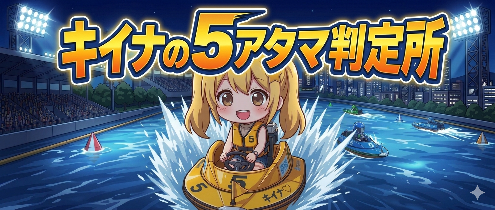

⚡
SECRET ACCESS
キイナの精密解析・ロック中ッ！
アクセスコードを入力してねッ！
UNLOCK
合言葉が違うよッ！やり直し！
合言葉を持っていない人は
公式LINEで「
合言葉
」って送ってねッ！⚡
💬
公式LINEで合言葉をGET

💬⚡「データを入力してねッ！アタシが精密解析で一撃の可能性を暴いてあげるよ！」
①
開催場を選択
会場を選択...
01# 桐生 (6.1%)
02# 戸田 (7.5%) ★激高
03# 江戸川 (6.6%)
04# 平和島 (6.8%)
05# 多摩川 (6.3%)
06# 浜名湖 (6.4%)
07# 蒲郡 (5.3%)
08# 常滑 (5.6%)
09# 津 (6.4%)
10# 三国 (5.2%)
11# びわこ (6.6%)
12# 住之江 (5.2%)
13# 尼崎 (5.4%)
14# 鳴門 (6.9%)
15# 丸亀 (5.4%)
16# 児島 (5.4%)
17# 宮島 (6.2%)
18# 徳山 (3.4%)
19# 下関 (4.8%)
20# 若松 (5.8%)
21# 芦屋 (4.2%)
22# 福岡 (3.8%)
23# 唐津 (5.0%)
24# 大村 (3.0%)
②
風のコンディション
無風〜弱風
向かい風 4m↑ (ダッシュ有利⚡)
追い風 3m↑ (もつれ期待)
強風 6m↑ (差し不発リスク)
③
5号艇の機力 (直線・伸び)
普通
上位 (展示タイム良好)
超抜 (スリット後伸びる🔥)
④
周回展示 (回り足・押し)
普通
強力 (出口の押し◎)
⑤
4カド(4号艇)の攻め期待度
期待薄
期待大 (まくり展開狙い)
⑥
2号艇の「壁」信頼度
普通
壁が薄い (凹む可能性アリ)
壁が厚い (A1級・安定感)
⑦
1号艇のイン信頼度
普通
不安定 (逃げ失敗率高い)
⚡ 精密解析を実行！ ⚡
推定5枠1着確率
0
%
💰 推奨:
5 - 124 - 1246
📚 24場・攻略ノートを見るッ！⚡